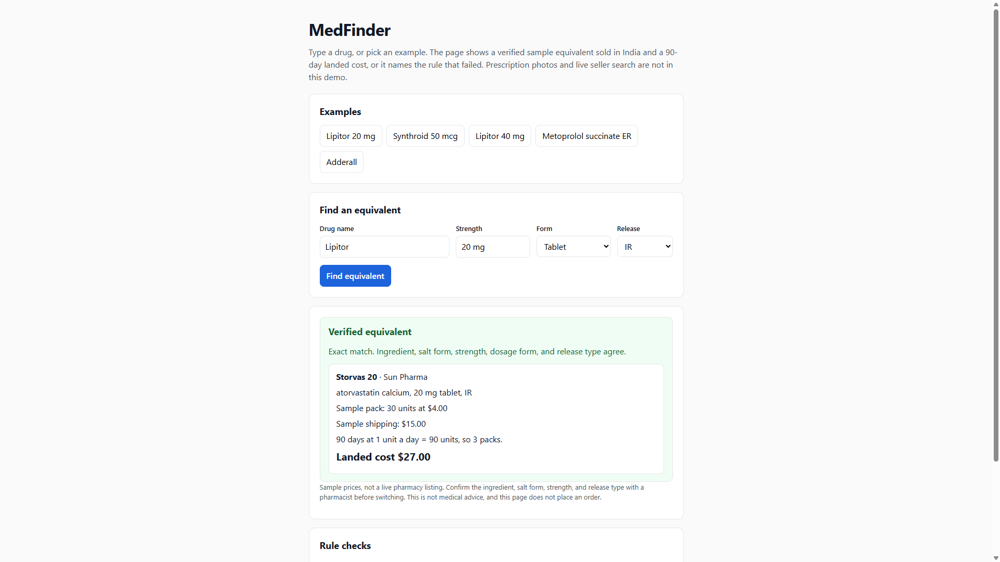

For a classmate or friend on a long-term US prescription: upload the prescription, see a verified cheaper equivalent sold in India, and see what it would cost landed.
Current Status: Build 1 local prototype. Open prototype/index.html in a browser. No install and no API key.
Demo: Screenshot below, November 8, 2026. Lipitor 20 mg tablet, immediate-release, matches sample listing Storvas 20. The illustrated 90-day landed cost is $27.00. The app can stay local through Week 4. A cloud URL comes in Build 5.

Who is this for? A classmate or friend on a long-term prescription (for example cholesterol, thyroid, or blood pressure medicine) who pays a high price at a US pharmacy and wants to know whether the same medicine is sold for less in India. A specific participant and testing session are pending.
The painful "Before" workflow: They leave the pharmacy with a brand name, pay the US price, or ask someone in India to buy it. They search the brand, find a different name, and cannot tell whether the ingredient, salt form, strength, and release type are the same. They message a chemist or try a website without knowing whether the seller is legitimate.
The "After" workflow with this product: In the local prototype, they type the drug or pick an example and see one verified Indian equivalent plus a sample landed cost. A match counts only when the ingredient, salt form, strength, dosage form, and release type all agree. The screen says to confirm with a pharmacist before switching. Photo upload is not built yet. Ordering stays outside the app.
Riskiest Assumption: A classmate will trust the match enough to use the price, and a rule on structured fields — not the model — can reject lookalikes such as metoprolol succinate versus tartrate, or extended-release versus immediate-release. This is untested. No outside user has tried it.
Simple Architecture: Prescription photo or typed drug name → MedFinder → a vision model extracts the drug into a fixed schema, then RxNorm and a curated India product table → verified equivalent and landed cost. The model may read the label. The code decides whether it matches.
What works / what shipped: The product page is public at asn5995.github.io/Medfinder. PRD v1 names one user and one workflow. A local prototype at prototype/index.html takes a typed drug and shows a sample Indian equivalent with a 90-day landed cost, or it names the rule that failed. The prototype runs locally. It does not read a prescription photo, search live sellers, or place an order.
Learning: This was my first time using Cursor. I set up my GitHub repository, connected Cursor to it, opened the prototype locally, and learned how to commit, push, and publish the page with GitHub Pages.
Working one task at a time helped. I gave Cursor a specific request, reviewed the changes, and checked the result before moving on.
I also tested the prototype myself. Lipitor at 20 mg showed a sample landed cost, and Lipitor at 40 mg showed no price, so the check has to compare strength, not only the drug name.
Outside user feedback: None. A specific classmate or friend has not tried this. My own checks are not outside user testing.
Analytics: PostHog is not installed. Installation and event checks stay pending for Build 2.
Actual build costs: No API or hosting spend recorded. Coding-agent token cost is unknown.
Actual hours: I spent 2 hours on Sunday, November 1, and 1.5 hours on Sunday, November 8. The total so far is 3.5 hours.
main and the /docs folder. The public URL loaded. At that moment the page still had the template placeholders.prototype/index.html, prototype/catalog.js, prototype/match.js, and run notes in AGENTS.md. Open the HTML file in a browser. No install and no API key.